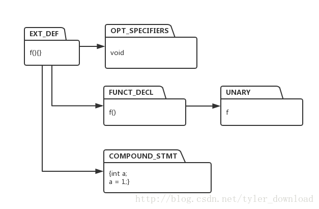
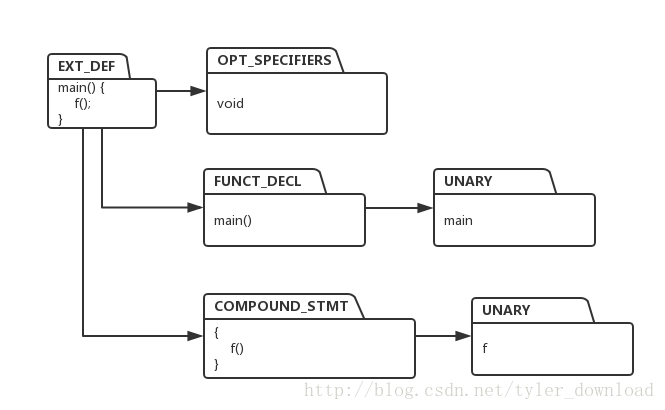

具体的代码讲解和调试演示过程，请参看视频：
用java开发C语言编译器
本节，我们看看，如何实现C语言中的函数调用，举个具体例子，在完成本节的代码后，我们的解释器功能进一步增强，使得它能解释执行下面的C语言代码：
void f() {
int a;
a = 1;
}
void main() {
f();
}我们先看看函数定义的语法表达式：
EXT_DEF -> OPT_SPECIFIERS FUNCT_DECL COMPOUND_STMT
FUNCT_DECL -> UNARY LP RP对应于函数f的定义 ，其中 OPT_SPECIFIERS 对应的是关键字void, FUNCT_DECL对应的是 f(), 最后COMPOUND_STMT对应的是：
{
int a;
a = 1;
}
根据表达式，解释器会构造如下执行树：

同理，对于main函数，我们也有同样的执行树：

在主函数main 中，实现了对函数f的调用，函数调用对应的语法如下：
UNARY -> UNARY LP RP
NUARY -> NAME
其中NAME 对应的是被掉函数名 f, LP RP 对应左右括号。
我们看看构造执行树的代码对此进行的相应改动，CodeTreeBuilder.java:
public class CodeTreeBuilder {
private String functionName;
private HashMap<String, ICodeNode> funcMap = new HashMap<String , ICodeNode>();
public ICodeNode buildCodeTree(int production, String text) {
ICodeNode node = null;
Symbol symbol = null;
switch (production) {
...
case CGrammarInitializer.NewName_LP_RP_TO_FunctDecl:
case CGrammarInitializer.NewName_LP_VarList_RP_TO_FunctDecl:
node = ICodeFactory.createICodeNode(CTokenType.FUNCT_DECL);
node.addChild(codeNodeStack.pop());
child = node.getChildren().get(0);
functionName = (String)child.getAttribute(ICodeKey.TEXT);
symbol = assignSymbolToNode(node, functionName);
break;
case CGrammarInitializer.NewName_TO_VarDecl:
//我们暂时不处理变量声明语句
codeNodeStack.pop();
break;
case CGrammarInitializer.NAME_TO_NewName:
node = ICodeFactory.createICodeNode(CTokenType.NEW_NAME);
node.setAttribute(ICodeKey.TEXT, text);
break;
case CGrammarInitializer.OptSpecifiers_FunctDecl_CompoundStmt_TO_ExtDef:
node = ICodeFactory.createICodeNode(CTokenType.EXT_DEF);
node.addChild(codeNodeStack.pop());
node.addChild(codeNodeStack.pop());
funcMap.put(functionName, node);
break;
....
}
}由于我们现在是基于函数调用来解释C语言代码的，因此，当我们将一个函数的执行树构造出来后，需要把在执行树的头节点加入一个哈希表，表的关键字用的就是函数名，当某个函数被调用时，解释器会从该表中，通过被调用函数的名字，找到该函数对应的执行树的头节点，然后再根据该执行树进行解释执行相应节点，这样，我们就能实现函数调用了。
我们再看看函数的执行部分，我们根据执行树，增加了若干个Executor，对应于函数定义执行树的头节点，我们增加了ExtDefExecutor,代码如下：
package backend;
import frontend.CGrammarInitializer;
public class ExtDefExecutor extends BaseExecutor {
@Override
public Object Execute(ICodeNode root) {
int production = (Integer)root.getAttribute(ICodeKey.PRODUCTION);
switch (production) {
case CGrammarInitializer.OptSpecifiers_FunctDecl_CompoundStmt_TO_ExtDef:
executeChild(root, 0);
ICodeNode child = root.getChildren().get(0);
String funcName = (String)child.getAttribute(ICodeKey.TEXT);
root.setAttribute(ICodeKey.TEXT, funcName);
executeChild(root, 1);
child = root.getChildren().get(1);
Object returnVal = child.getAttribute(ICodeKey.VALUE);
if (returnVal != null) {
root.setAttribute(ICodeKey.VALUE, returnVal);
}
break;
}
return root;
}
}
它的逻辑简单，由于它先执行FUNCT_DECL节点，然后在执行函数体，也就是大括号包住的部分。
我们再看看FUNCT_DECL节点对应的Executor:
public class FunctDeclExecutor extends BaseExecutor {
@Override
public Object Execute(ICodeNode root) {
int production = (Integer)root.getAttribute(ICodeKey.PRODUCTION);
switch (production) {
case CGrammarInitializer.NewName_LP_RP_TO_FunctDecl:
root.reverseChildren();
copyChild(root, root.getChildren().get(0));
break;
}
return root;
}
}
该节点执行时，只是单纯的拷贝子节点信息，后面我们实现由参数传递的函数调用时，该节点将发挥重要作用。
由于函数调用对应的语法是：
UNARY -> UNARY LP RP
因此，UnaryExecutor也要做相应改动，代码如下：
public class UnaryNodeExecutor extends BaseExecutor{
@Override
public Object Execute(ICodeNode root) {
executeChildren(root);
int production = (Integer)root.getAttribute(ICodeKey.PRODUCTION);
String text ;
Symbol symbol;
Object value;
ICodeNode child;
switch (production) {
...
case CGrammarInitializer.Unary_LP_RP_TO_Unary:
//先获得函数名
String funcName = (String)root.getChildren().get(0).getAttribute(ICodeKey.TEXT);
//找到函数执行树头节点
ICodeNode func = CodeTreeBuilder.getCodeTreeBuilder().getFunctionNodeByName(funcName);
if (func != null) {
Executor executor = ExecutorFactory.getExecutorFactory().getExecutor(func);
executor.Execute(func);
}
break;
...
}它首先找到要调用的函数名，利用函数名在函数哈希表中找到对应的执行树的头节点，根据头结点构造函数的执行节点ExtDefExecutor，然后调用该Executor的execute接口，于是ExtDefExecutor便开始变量函数f的执行树，在对应节点执行相应操作，从而实现函数f被调用的效果。
具体的代码讲解和调试演示请参看视频。
更多技术信息，包括操作系统，编译器，面试算法，机器学习，人工智能，请关照我的公众号：